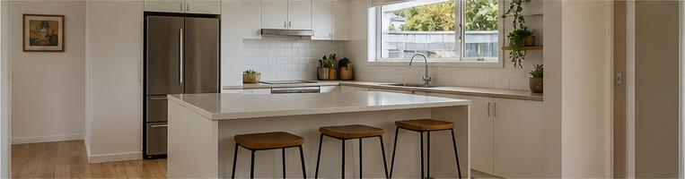

Continuous frame journey
Frame River
Captured frames drift through a calm horizontal current, moving from supporting context into a focused centre and onward. A compact filmstrip preserves orientation for long video scans.
- Depth carousel
- Continuous multi-frame flow
- Compact visual timeline
Preview scenarioKeys: 1 · 5 · 0
Coverly
Following every frame
Looking for individual items…


Frame 1 of 5 in focus
Reviewing the whole scene, gently